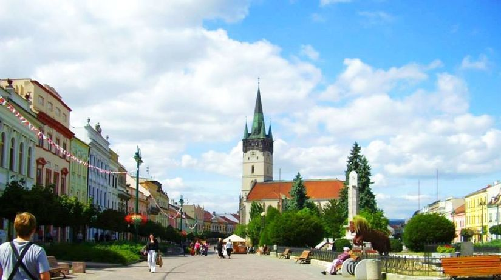
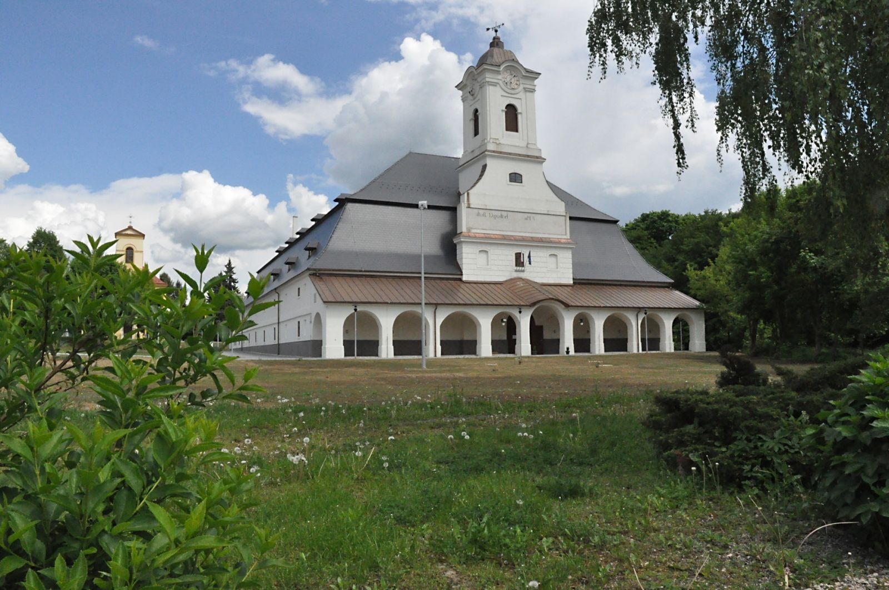
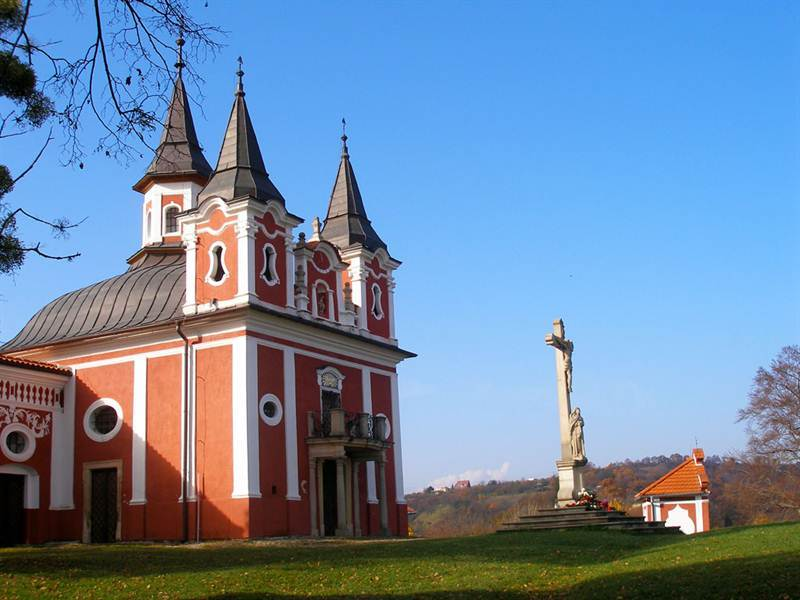

Prešov
Najkrajšie miesta
Konkatedrála sv. Mikuláša
Konkatedrála bola postavená v polovici 14. storočia ako jednoloďová s vyvýšeným polygonálnym presbytériom. Chrám je neskorogotickou stavbou halového typu (výška všetkých lodí je rovnaká) s troma loďami, troma presbytériami, so sieťovou a hviezdicovou klenbou. V roku 1502 stavbu rozšírili smerom na juh v neskorogotickom štýle. Na prestavbe sa podieľali majstri kamenári Mikuláš a Michal pod vedením prešovského staviteľa J. Brengiszera. Trojlodie bolo dokončené v roku 1505. Celá prestavba bola dokončená v roku 1515. Počas tohto obdobia zaklenuli bočnú svätyňu, dokončili vstupnú halu kostola a vytesali kamenné ostenie okien.
Solivar
Solivar v Prešove, národná kultúrna pamiatka patrí medzi najvýznamnejšie technické pamiatky na Slovensku. Je to unikátny komplex technických objektov na čerpanie a varenie soli zo soľanky, pochádzajúci zo 17. storočia. K objektom na ťažbu kamennej soli a čerpanie soľanky v Solivare patrí najmä šachta Leopold, četerne (rezervoáre soľanky), huta , varňa , sklad soli (komory), kováčske dielne a klopačka (turňa).
Kalvária
Prešovská kalvária, v minulosti považovaná za druhú najkrajšiu v celom Uhorsku hneď po banskoštiavnickej, sa nachádza v príjemnom prostredí nevysokého vŕšku na západnom okraji mesta. Tvorí ju súbor ozdobných kaplniek krížovej cesty a kostolíka sv. Kríža. Kalvária predstavuje veľmi pekné miesto na malý výlet či prechádzku. Okrem krásneho prostredia a hodnotnej architektúry tu na návštevníka čaká aj vynikajúci výhľad na mesto.
Pravidelné podujatia
| Názov | Termín konania | Miesto konania | Dĺžka trvania |
|---|---|---|---|
| Akademický Prešov | 23. - 26.04. 2020 | DJZ | 4 dni |
| Prešovský half maratón | 31.05.2020 | bude upresnené | 1 deň |
| Vianočné trhy | 25.11. - 23.12.2019 | Hlavná ulica | 30 dní |
| Poznámka: | zmena vyhradená | ||
Šport v Prešove
Hádzaná
HT Tatran Prešov je najúspešnejší slovenský hádzanársky klub so sídlom v Prešove. Klub bol založený v roku 1952. Je mnohonásobný majster Slovenska a Česko-Slovenska a mnohonásobný víťaz národného pohára. Klubové farby sú zelená a biela. Domáce zápasy hráva klub v hale Tatran Handball Arena s kapacitou 3 870 miest. Od roku 2017 je trénerom seniorského družstva Chorvát Slavko Goluža. Je pravidelný účastník najvyššej slovenskej súťaže – extraligy, a od roku 2011 aj nadnárodnej interligy – SEHA ligy.
Futbal
1. FC Tatran Prešov je najstarší slovenský futbalový klub. Momentálne pôsobí v 3. lige v skupine východ.
Hokej
HC Prešov Penguins bol založený v roku 1928. Držiteľ jedného titulu majstra Slovenska z roku 1932. V súčasnosti hrá v druhej najvyššej hokejovej súťaži Slovenska - v 1. hokejovej lige SR. V minulosti pôsobil aj v slovenskej Extralige.